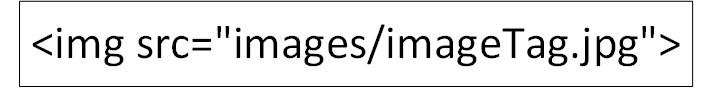

Working with Image Files
Images that cen be read by a browser are of three commont types: jpg, gif, and png.
The jpg file fiormat is bestfor photographs and illustrations with subtle colors.
The gif format is bvest for line drawings, illustrations with just a frew colors, and images of text. Giff files also provide transparency so that background colors show through your images. Gifs cal also have animations. In fact, gifs are rarely used unless animation is required.
The png file format has the same general features as gif, but without the animation capabilities. It is preferred over gif becuase it delivers a higher qality image and a smaller file size, and therefore loads faster.
An HTML file contains the code instructing where to place an image file on your web page, but the images are not included in the html file. Image files are stored separatly, located anywhere on the web, and pulled by the code in the html file via their URL. However, as best practice, image files are typically saved in a subfolder under the site's main folder, and call the folder images.
The HTML code to call an image from a separate folder is:
...where "img src" stands for "image Source"
This example is pulling an image from a URL location